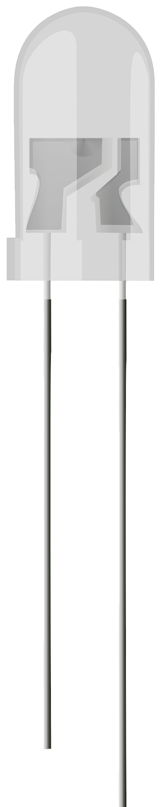

Arduino
Wire
LED



RASPBERRY PI : The Raspberry Pi was created in February 2012 by the Raspberry Pi Foundation, Originally setup to promote and teach basic computer science in schools and colleges around the UK. They initially released 2 Devices, the Model A and the Model B, these computers ranged in spec and capabilities. Soon after the release of these products a community was formed and thousands of “Tech-Heads” bought one and started to create new projects with it, for instance setup a Home Media Centre and played the popular game Mine craft etc. The products were so popular due to their lower cost.
LED's : LED stands for Light Emitting Diode, and glows when electricity is passed through it. When you pick up the LED, you will notice that one leg is longer than the other. The longer leg (known as the ‘anode’), is always connected to the positive supply of the circuit. The shorter leg (known as the ‘cathode’) is connected to the negative side of the power supply, known as ‘ground’.Following figure shows LED structure.
RESISTOR : We must ALWAYS use resistors to connect LEDs up to the GPIO pins of the Raspberry Pi. The Raspberry Pi can only supply a small current (about 60mA). The LEDs will want to draw more, and if allowed to they will burn out the Raspberry Pi. Therefore putting the resistors in the circuit will ensure that only this small current will flow and the Pi will not be damaged.
1. CLICK ON THE EXPLORE LAB BUTTON FROM HOMEPAGE
2. SELECT THE SIMULATION TAB
3. DRAG THE ARDUINO AND DROP IT ON ARDUINO PLACE
4. DRAG THE LED AND DROP IT ON LED PLACE
5. DRAG THE RED WIRE AND DROP IT ON IT'S PLACE
6. FINALLY DRAG THE BLACK WIRE AND DROP IT ON IT'S PLACE
7. CLICK ON THE SUBMIT BUTTON TO START THE SIMULATION